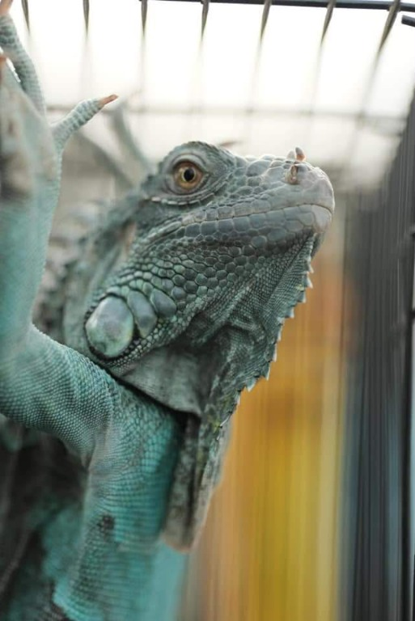
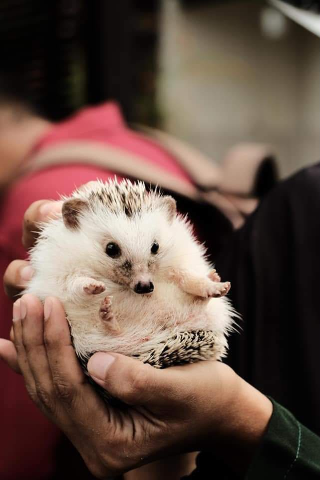
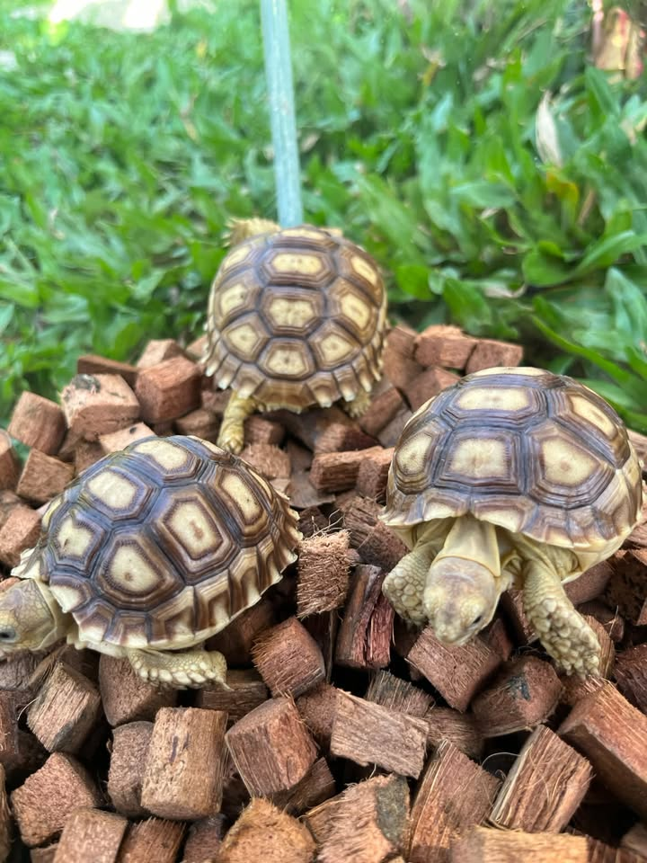
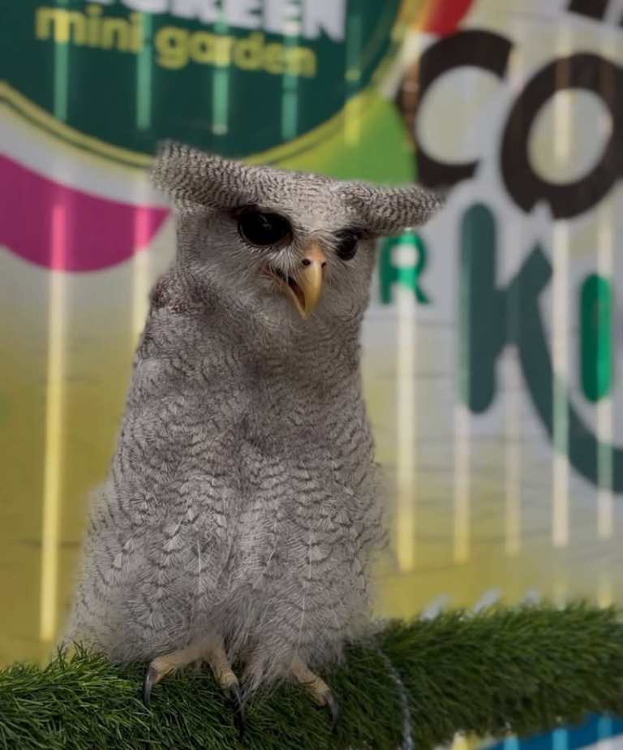
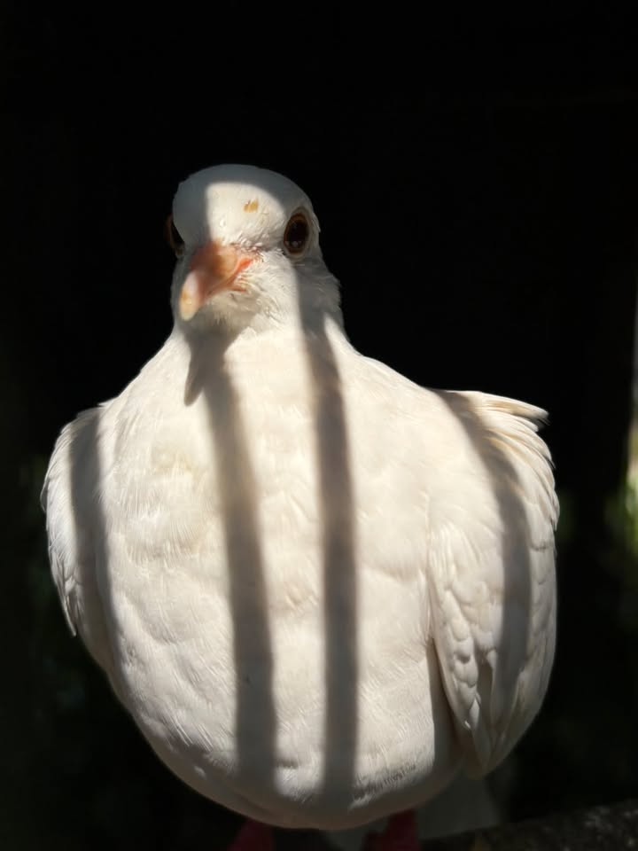
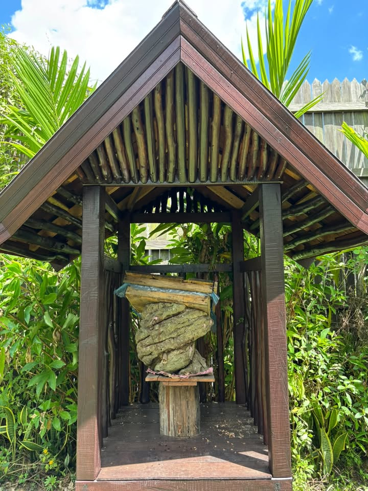
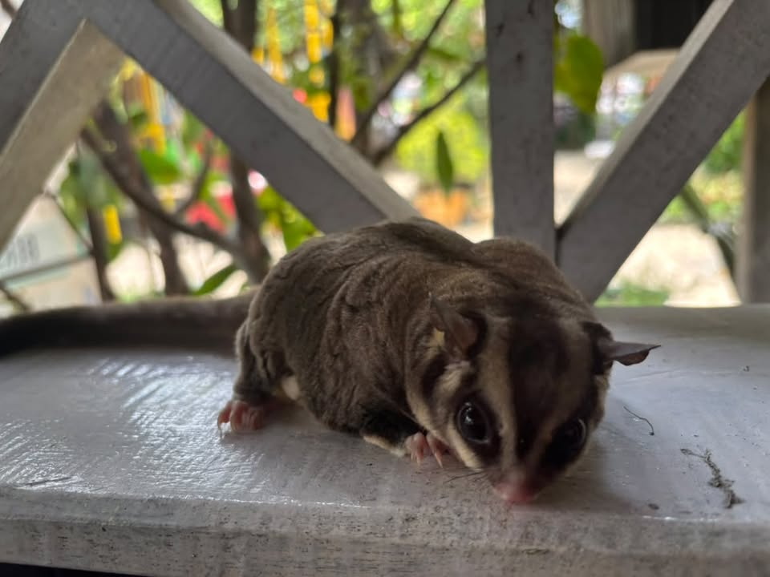
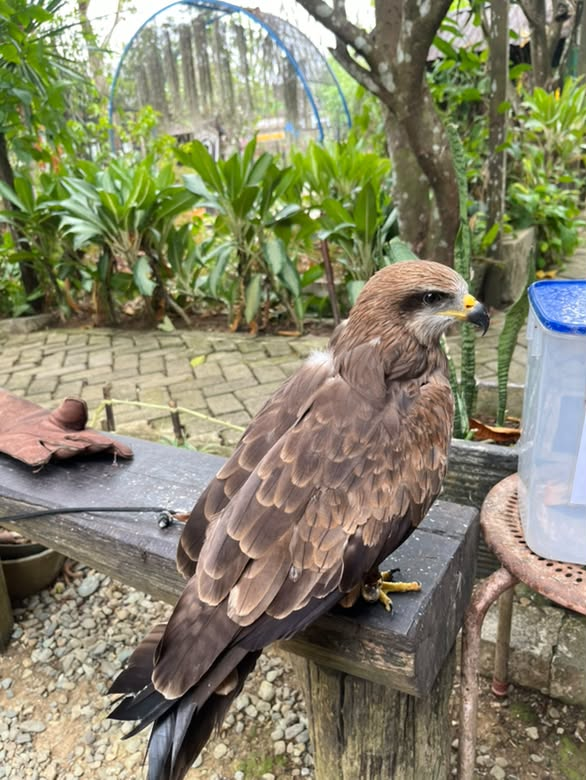
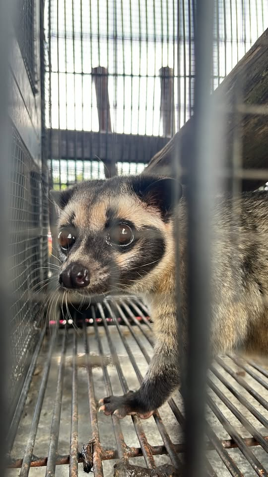

Bunga 01
Bunga Telang
Clitoria ternatea
Ciri-ciri bunga
- Umumnya berwarna biru keunguan; ada juga varietas putih.
- Mahkotanya menyerupai kupu-kupu dan tumbuh merambat.
- Sering dimanfaatkan sebagai pewarna alami makanan dan minuman, serta tanaman hias.
Kenali kehidupan di taman
Di Naureen Mini Garden ada banyak bunga yang harum dan cantik. Yuk, kita sama-sama mengenal bunga dan hewan yang ada di taman.
Warna-warni dari taman
Setiap bunga punya bentuk, warna, dan keunikan masing-masing. Temukan beberapa bunga yang dapat dijumpai di Naureen Mini Garden.
Bunga 01
Clitoria ternatea

Bunga 02
Bougainvillea

Bunga 03
Allamanda cathartica

Bunga 04
Keluarga Orchidaceae

Bunga 05
Hibiscus rosa-sinensis

Bunga 06
Rosa

Bunga 07
Portulaca grandiflora

Bunga 08
Orthosiphon aristatus

Bunga 09
Antigonon leptopus
Kenalan dengan satwa
Selain tanaman, taman juga menjadi tempat untuk mengenal satwa dan peran pentingnya di lingkungan.

Fauna 01
Jenis: Reptil (Iguana sp.)
Reptil dengan kulit bersisik, ekor panjang, dan jambul di sepanjang punggung. Amati dari luar kandang dan jangan menyentuh tanpa pendamping.

Fauna 02
Jenis: Mamalia berduri
Mamalia kecil yang tubuhnya ditutupi duri sebagai perlindungan. Lihat bentuk hidung dan durinya dari dekat bersama pendamping.

Fauna 03
Jenis: Reptil darat (Centrochelys sulcata)
Kura-kura darat yang mudah dikenali dari tempurungnya yang kokoh dan berpola. Amati gerak dan bentuk tempurungnya tanpa mengganggu.

Fauna 04
Jenis: Burung pemangsa malam (ordo Strigiformes)
Burung pemangsa yang memiliki mata menghadap ke depan dan pendengaran tajam. Jaga suara tetap tenang saat mengamatinya.

Fauna 05
Jenis: Burung (keluarga Columbidae)
Burung yang akrab dijumpai di sekitar manusia. Amati bulunya yang lembut, paruhnya, dan cara merpati bergerak di taman.

Fauna 06
Jenis: Lebah tanpa sengat (suku Meliponini)
Lebah tanpa sengat yang hidup berkoloni. Kelulut membantu penyerbukan tanaman saat mencari nektar; amati sarangnya dari jarak aman dan jangan mengganggu koloninya.

Fauna 07
Jenis: Mamalia berkantung (Petaurus breviceps)
Mamalia kecil yang dapat meluncur di udara dengan selaput di antara kaki depan dan belakang.

Fauna 08
Jenis: Burung pemangsa (raptor)
Burung pemangsa dengan paruh bengkok dan cakar kuat. Jenis elang yang lebih spesifik belum dapat dipastikan dari foto.

Fauna 09
Jenis: Musang bulan (Paguma larvata)
Mamalia yang memiliki pola gelap khas di sekitar wajah dan aktif mencari makan, terutama pada malam hari.